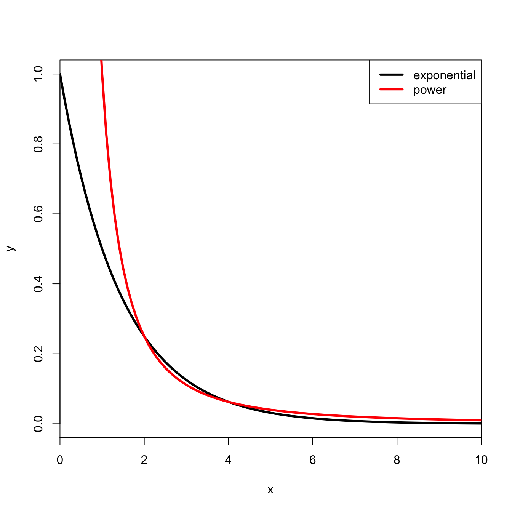
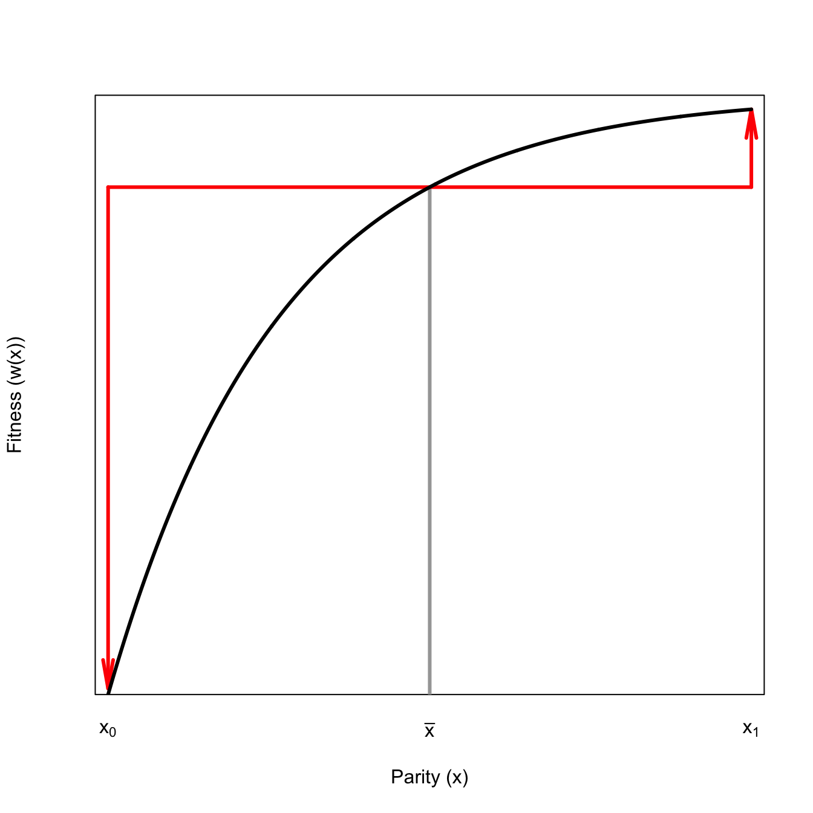
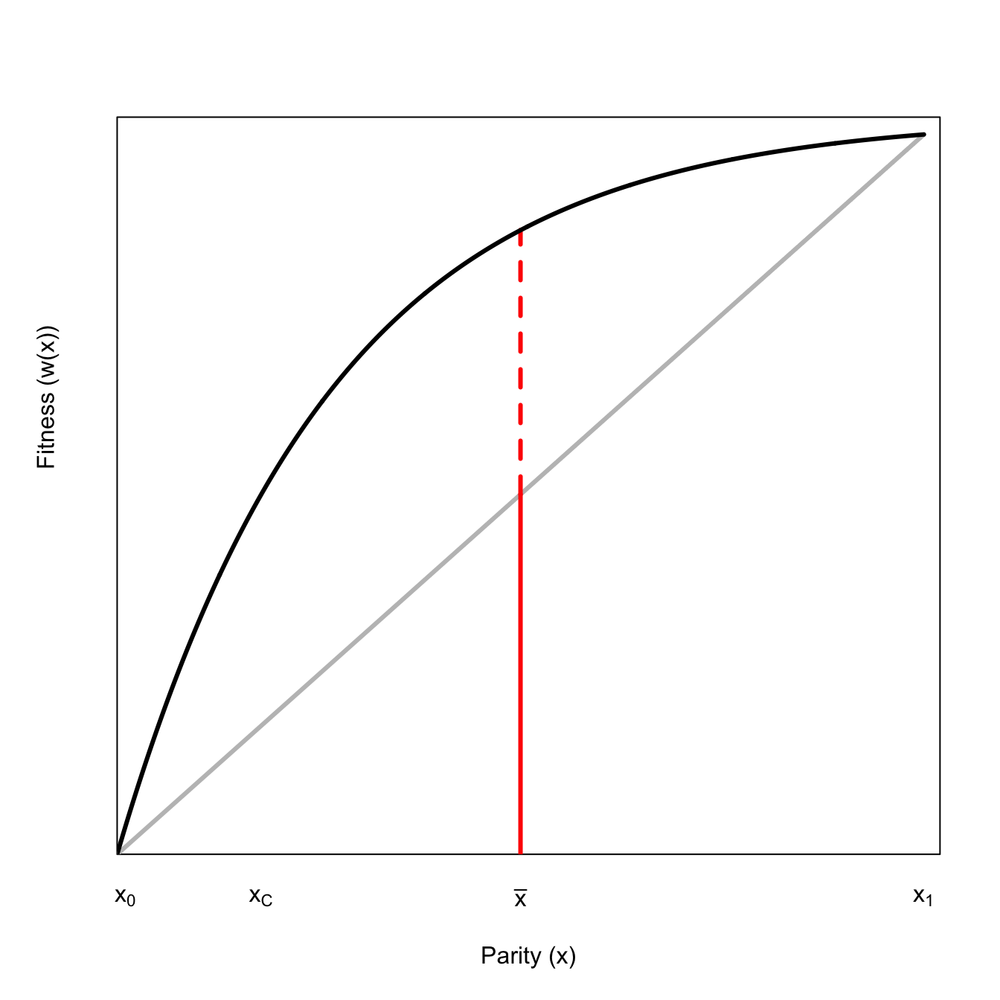
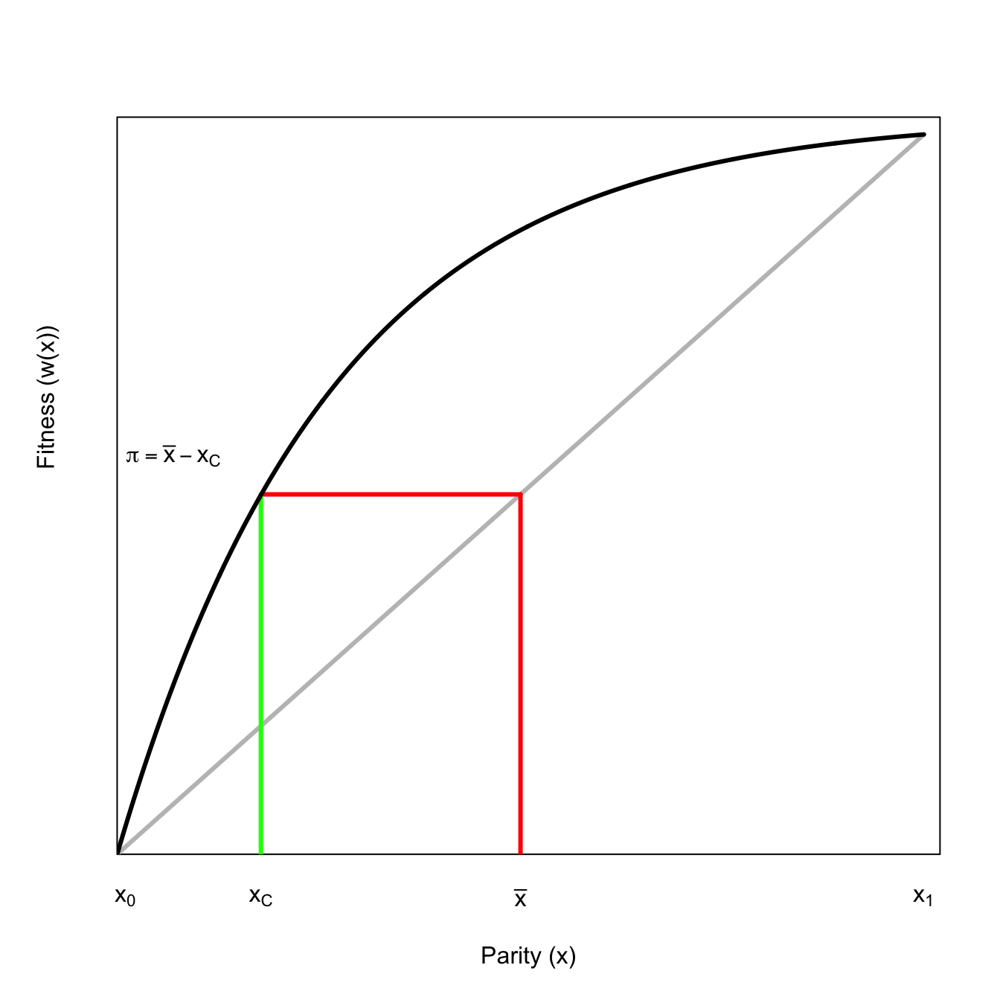
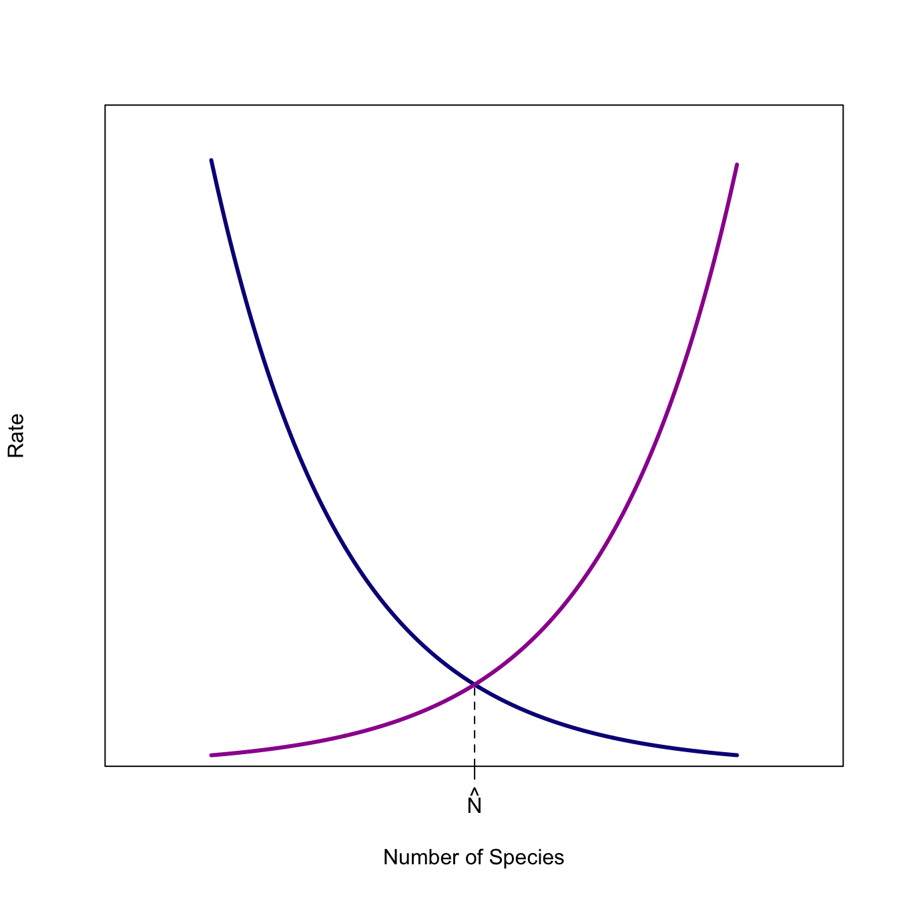
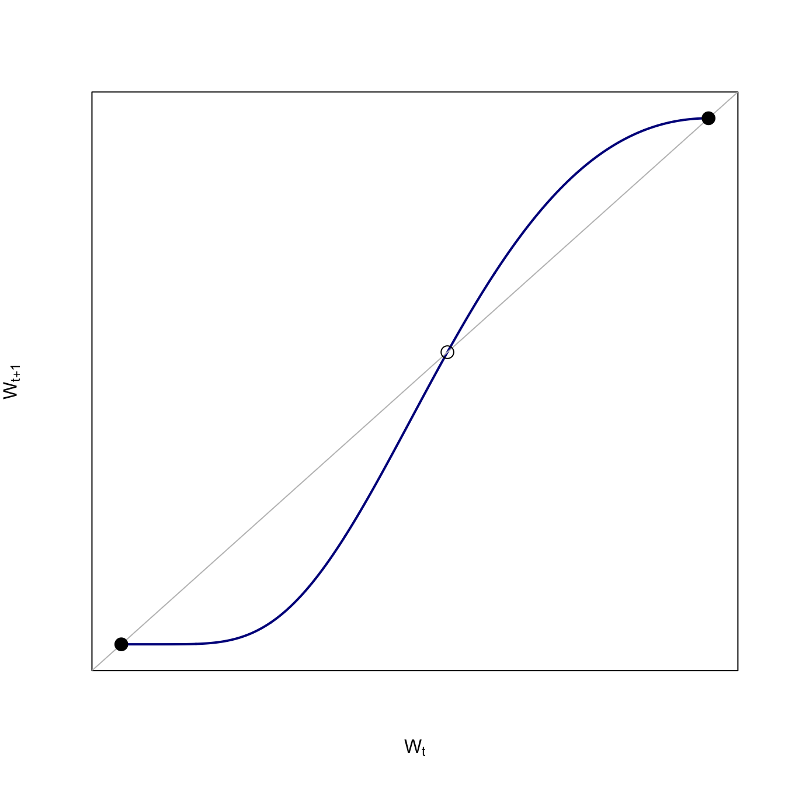
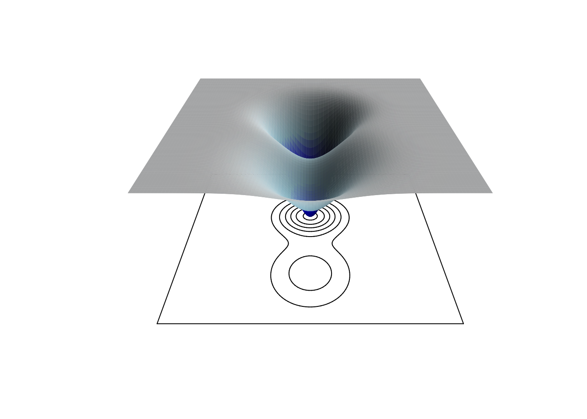

m <- 2
b <- 1
curve(m*x+b, 0, 10, lwd=3, xlab="x", ylab="y")2 Interpreting Scientific Figures
2.1 Introduction
Understanding scientific figures is an important part of becoming a scientist or a critical consumer of scientific information. This is a skill that, alas, is generally not taught in most schools. Here, I will try to provide a gentle introduction to reading scientific figures, especially theoretical plots. In chapter Chapter 3, we go into some detail on how to generate scientific plots in R.
We use theory in science to bring order to the complexity we observe in the world. Theory generates our hypotheses but it also guides us in what we observe, how we measure it, and what we should find surprising. Surprise is essential for the scientific enterprise because it is the surprise that comes when we observe something novel from a process we thought we understood that generates innovation and explanation.
A couple starting points. We will use some very basic calculus here: Derivatives, second derivatives, and Taylor series, which give us slopes, curvature, and tangents for making figures.
2.2 Lines
Presumably, we all remember the formula for a straight line from high school algebra:
\[ y = mx + b, \]
where \(m\) is the slope and \(b\) is the \(y\)-intercept.
Clearly, this is a straight line. What this means is that for whatever \(x\)-value you increment, you will increase by a factor of two.
# define a linear function
lin <- function(x,m=2,b=1) m*x + b
# draw curve, add increments
curve(lin(x), 0, 10, lwd=3, xlab="x", ylab="y")
segments(1,lin(1),3,lin(1), col="red", lty=3)
segments(3,lin(1),3,lin(3), col="red", lty=3)
segments(4,lin(4),6,lin(4), col="red", lty=3)
segments(6,lin(4),6,lin(6), col="red", lty=3)
segments(7,lin(7),9,lin(7), col="red", lty=3)
segments(9,lin(7),9,lin(9), col="red", lty=3)Of course, we can show this analytically by calculating the derivative. Let \(f(x) = mx + b\), then \(f'(x) = m\). Not surprising since \(m\) is literally the slope that the rate of change in \(f(x)\) is always \(m\).
Linear change is a touchstone. We are often interested if something is changing faster or more slowly than linear.
We often use linear functions to approximate more complex functions in some restricted range. For example, in the model of optimal virulence, discussed below, we need to draw a tangent line to the function relating transmissibility to disease-induced mortality. This tangent line is a linear approximation of that function in the vicinity of the optimal virulence.
Note that this is what a derivative is. It’s linear representation of the slope of a function over an infinitesimal change of the input variable.
2.3 Curves
2.3.1 Polynomial Curves
When something is nonlinear, it changes at different rates in different parts of the curve. The simplest extension from a straight line is a polynomial, e.g., a quadratic function.
# quadratic function
quad <- function(x,m=2,b=1) m*x^2+b
curve(quad(x), 0, 10, lwd=3, xlab="x", ylab="y")
segments(1,quad(1),3,quad(1), col="red", lty=3)
segments(3,quad(1),3,quad(3), col="red", lty=3)
segments(4,quad(4),6,quad(4), col="red", lty=3)
segments(6,quad(4),6,quad(6), col="red", lty=3)
segments(7,quad(7),9,quad(7), col="red", lty=3)
segments(9,quad(7),9,quad(9), col="red", lty=3)The quadratic curve changes at an increasing rate. For \(f(x) = mx^2 + b\), \(f'(x)=2x\).
2.3.2 Exponential and Logarithmic Curves
When people say that something is growing “exponentially,” what they usually mean is that it’s growing fast. Exponential growth is much more specific than that (and there are, indeed, ways to grow much faster than exponentially!). In continuous time, something grows exponentially if it increases at a constant rate regardless of its size.
Exponential growth has the wild property that the derivative of an exponential is proportional to the exponential itself. For example, if \(f(x)=e^r\), then \(f'(x) = e^r\). If \(f(x)=e^{2r}\), then \(f'(x) = 2e^{2r}\), and so on.
curve(exp(x), 0, 10, lwd=3, xlab="x", ylab="y")
segments(1,exp(1),3,exp(1), col="red", lty=3)
segments(3,exp(1),3,exp(3), col="red", lty=3)
segments(4,exp(4),6,exp(4), col="red", lty=3)
segments(6,exp(4),6,exp(6), col="red", lty=3)
segments(7,exp(7),9,exp(7), col="red", lty=3)
segments(9,exp(7),9,exp(9), col="red", lty=3)Looking at the increments, we quickly discern another important feature of exponential growth: it sneaks up on you! In the early phase of an exponential-growth process, it can be quite difficult to tell it apart from linear growth or even no growth. The red dotted lines showing the growth between \(x=1\) and \(x=3\) are barely visible.
Because of the explosiveness of exponential growth, the initial conditions can matter a lot for outcomes. Compare the following two curves:
curve(5*exp(x), 0, 10, lwd=3, col="red", xlab="x", ylab="y")
curve(1*exp(x), 0, 10, lwd=3, col="black", add=TRUE)
We predict that virulence of a virus, for example, will increase with the size of the infectious innoculum. The intuition behind this prediction is that a larger innoculum provides a larger initial population size that can quickly increase to overwhelm a host’s immunological defenses. The smaller size of the viral population for any given time after infection arising from the smaller innoculum provides a greater likelihood that the host will control the infection quickly and with less tissue damage, etc.
It’s also super-important to note that things can also decrease exponentially! Exponential decay is a thing.
curve(50*exp(-x), 0, 10, lwd=3, xlab="x", ylab="y")
segments(1,50*exp(-1),3,50*exp(-1), col="red", lty=3)
segments(3,50*exp(-1),3,50*exp(-3), col="red", lty=3)
segments(4,50*exp(-4),6,50*exp(-4), col="red", lty=3)
segments(6,50*exp(-4),6,50*exp(-6), col="red", lty=3)
segments(7,50*exp(-7),9,50*exp(-7), col="red", lty=3)
segments(9,50*exp(-7),9,50*exp(-9), col="red", lty=3)Compare them.
# draw exp first to make sure axes fit
require(viridisLite)
c <- plasma(3)
curve(quad(x), 0, 10, lwd=3, col=c[1],
xlab="x", ylab="y",
xaxs="i", yaxs="i")
curve(lin(x), 0, 10, lwd=3, col="black", add=TRUE)
curve(exp(x), 0, 10, lwd=3, col=c[2], add=TRUE)
curve(log(x), 0.01, 10, lwd=3, col=c[3], add=TRUE)
legend("topleft", c("linear","quadratic","exponential","logarithmic"),
col=c("black",c), lty=1, lwd=3)2.3.3 Power Laws
It turns out that much of the world – particularly in biology – scales according to a power law. Nearly everything you can imagine measuring about an organism scales with an organism’s body mass and it does so according to a power law. So for some outcome \(Y\) (e.g., lifespan, annual fertility, brain mass, metabolic rate, etc.), where we let \(W\) indicate body mass, the scaling relationship takes the form
\[ Y = A W^a. \]
If \(a>1\), this curve will be convex (i.e., increasing returns to size), while if \(0<a<1\), the curve will be concave. If \(a=1\), then we simply have a straight line with slope \(A\) and intercept zero. In comparative biology, the case where \(a=1\) is known as “isometry” and the case where \(a \neq 1\) is known as “allometry”.
If we take logarithms of both sides of the power-law relation, we get a linearized form,
\[ \log(Y) = \log(A) + a \log(W). \]
Plotting data on double-logarithmic axes can help in diagnosing a power law.
When \(a<0\), we have the case of power-law decay. This provides a very interesting case where the decay of some function can be considerably slower than exponential. For example, most of the common probability distributions that we use (e.g., normal, exponential, Poisson, binomial) have “exponential” tails. This means that the probability associated with a particular value decays exponentially as the values move away from the region of highest probability. In contrast, power-law probability distributions can have fat tails, meaning that extreme values are more likely than they would be under a comparable probability distribution with exponential decay.
The key difference between a power law and an exponential, which at first glance appear to be quite similar, is that for the power law, the power is constant (\(x^a\)) whereas for an exponential, the power is the variable \(a^x\) (where we usually use the specific value of \(a=e\), where \(e\) is the base of the natural logarithm). Note that we’ve already looked at a comparison between exponential growth and power-law growth, when we compared the quadratic (\(a=2\)) to the exponential. Let’s look at power-law decay now.
curve(0.5^x,0, 10, lwd=3, xaxs="i", xlab="x", ylab="y")
curve(x^-2, 0, 10, lwd=3, col="red", add=TRUE)
legend("topright",c("exponential","power"), lwd=3, col=c("black","red"))
The power decay starts much higher (it is, in fact, asymptotic to the \(y\)-axis) and declines very rapidly at first. However, while the exponential curve will quickly approach the \(x\)-axis (to which it is asymptotic), the polynomial power-law curve will approach it very slowly. For the exponential curve, every \(x\)-increment of one reduces the value of \(y\) by a half. In contrast, for the power-law, every increment contributes a tiny marginal decay as the values of \(x\) increase. For the exponential the ratio of subsequent \(y\) values is \(0.5^{x+1}/0.5^{x} = 0.5^1=0.5\) for all values of \(x\). The analogous ratio for the power law changes for different values of \(x\). When \(x\) is small, the ratio of successive \(y\) values is similar to the exponential. For example, when \(x=2\), \((x+1)^{-2}/x^{-2}=0.44\). However, when \(x=100\), the ratio is nearly one (=0.98), meaning that the curve is decreasing very slowly. Successive values of the function are nearly identical, making the ratio close to one.
2.3.4 Why We Care About Power Laws
The figure above shows how the probability of very high values decays to zero for the expontial function, but decays slowly for the polynomial power law. This turns out to be very important for thinking about the probability of extreme events.
We say that a probability distribution has a heavy tail if, for large values of \(x\), the log of the probability of \(x\) is sublinear (Nair, Wierman, and Zwart 2022). Remember that when we take the logarithm of an exponential, we linearize it, so this is equivalent to saying that a heavy-tailed distribution decays more slowly than exponential. This is exactly what power-law distributions do. Their tails decay slowly – much slower than an exponential.
What this means is that if a random variable is characterized by a power-law distribution, extreme values, while not likely, are also not impossible. Heavy tails make the impossible only unlikely.
Consider the case of a normal (Gaussian) distribution, which has exponential tails and the related \(t\)-distribution, which has heavy tails. The probability density function (pdf) for the normal distribution is:
\[ f(x)=\frac{1}{\sqrt{2 \pi \sigma^2}} e^{-\frac{(x-\mu)^2}{2 \sigma^2}}, \] where the parameters \(\mu\) and \(\sigma^2\) represent the mean and variance of the distribution.
The pdf for the \(t\) distribution is:
\[ f(x) = \frac{\Gamma\left(\frac{\nu+1}{2}\right)}{\sqrt{\pi \nu}\; \Gamma\left(\frac{\nu}{2}\right)}\left(1+\frac{x^2}{\nu}\right)^{-\frac{\nu+1}{2}}, \] where the parameter \(\nu\) represents the degrees of freedom of the distribution. Don’t worry too much about that first fraction in the pdf. That is just a normalizing factor that ensures that the probability integrates to one (as all pdfs must).
Note that, as with our last section, the pdf for the normal distribution (with exponential tail) has \(x\) in the exponent, while for the \(t\)-distribution (with polynomial tail), \(x\) is being raised to a constant power related to the degrees of freedom.
We can compare the two probability density functions:
x <- seq(-10,10,length=1000)
plot(x,dnorm(x), type="l", lwd=2, axes=FALSE, frame=TRUE,
yaxs="i", ylim=c(0,0.42), xlim=c(-10,10),
xlab="Outcome (x)", ylab="Probability of Outcome (P(x))")
lines(x,dt(x,df=1), lwd=2, col="red")
legend("topright",c("normal","t"), lwd=3, col=c("black","red"))The normal distribution is higher (i.e., has more mass) in the middle of the plot. The \(t\) distribution has less of its mass in the central part of the distribution, and spreads out more of its total mass to its tails.
I should probably note that this is a particularly extreme \(t\) distribution, as it only has one degree of freedom (this distribution is also known as a Cauchy distribution). This makes it particularly easy to see the differences between the normal and the \(t\) distribution.
We can focus on just the right tail. Normal theory tells us that the probability of observing any values greater than four standard deviations aboce the mean is essentially zero. We can calculate the remaining area in the tail above four standard deviations (for the standard normal distribution) by subtracting the cumulative distribution function at \(x=4\) from one.
1-pnorm(4)[1] 3.167124e-05Pretty nearly zero.
What about the same calculation for our \(t\) distribution with one degree of freedom?
1-pt(4,1)[1] 0.07797913Nearly eight percent of the total probability remains in the tail! That is, you have a 7.8% chance of observing a value of \(x \geq 4\).
Let’s compare a plot of the tails of the two distributions:
plot(x,dnorm(x), type="l", lwd=2, axes=FALSE, frame=TRUE,
yaxs="i", xaxs="i", ylim=c(0,0.4), xlim=c(0,10),
xlab="Outcome (x)", ylab="Probability Density of Outcome (f(x))")
lines(x,dt(x,df=1), lwd=2, col="red")
abline(h=0.01,lty=3)
axis(1)
axis(2)
legend("topright",c("normal","t"), lwd=3, col=c("black","red"))The horizontal dotted line indicates the value where the probability density is 1%. We can see that the \(t\) distribution crosses this thresholds at a value of approximately \(x=6\). The term six-sigma event is often used to indicate an outcome that is essentially impossible under our current understanding of a system. This comes from the fact that for a standard normal distribution, the variable \(x\) is equivalent to the number of standard deviations from the mean of zero (a standard normal has \(\mu=0\) and \(\sigma^2=\sigma=1\)). Thus, for a standard normal distribution, an observed value of of \(x=6\) is six standard deviations (or \(6\sigma\)) greater than the mean and, based on what we know about the normal distribution, has a probability of essentially zero. Not so for the \(t\) distribution! We can see that even extremely high values of \(x\) have associated tail probabilities that, while low, are still a long way from zero.
1-pt(6,1)[1] 0.052568461-pt(8,1)[1] 0.039583421-pt(10,1)[1] 0.03172552The key question, of course, is whether a \(t\) distribution (or other heavy-tailed distribution) represents any phenomena we actually care about scientifically. Turns out, there are lots of things in Nature that follow power laws. One of the more interesting examples where the outcome is actually a \(t\) distribution was described by Weitzman (2009). When you have to learn about the mean value of some normally-distributed variable, but have limited opportunities to learn, the distribution of that mean is itself a \(t\) distribution. This has huge implications for decision-making that I will discuss elsewhere.
2.4 Convexity and Concavity
The derivative of a function provides a measure of how fast a function is changing. The second derivative measures how that rate of change itself is changing. In this sense, it measures the curvature of a function.
Many theoretical models depend on the curvature of functions to make their predictions. A common assumption employed in many theoretical models is that of concavity. A very common use of concavity in theory is when curve shows diminishing marginal returns. The word “marginal” essentially means the derivative, so diminishing marginal returns means that the derivative of the function is getting smaller for larger values of the input.
The classic trade-off model for the evolution of virulence relies on the concavity of transmissibility with respect to disease-induced mortality. If virulence produces decreasing marginal transmissibility with respect to disease-induced mortality, then selection will favor intermediate virulence. Denote virulence by \(x\). Both transmission and disease-induced mortality are functions of virulence: \(\beta(x)\) and \(\delta(x)\). The fitness measure for the pathogen is, as usual, \(R_0\), which we can write as
\[ R_0 = \frac{\beta(x)}{\mu + \delta(x)}, \]
where \(\mu\) is the disease-independent mortality.
To find the optimal value of virulence, differentiate with respect to \(x\) and solve for \(dR_0/dx=0\). Employing the quotient rule for differentiation and doing a little algebra to tidy up, we get:
\[ \frac{d \beta(x)}{d \delta(x)} = \frac{\beta(x^*)}{\mu + \delta(x^*)}, \]
where \(x^*\) indicates the optimal value of virulence.
The geometric interpretation of this result is that optimal virulence satisfies the condition that a line, rooted at the origin, is tangent to the curve relating transmissibility to mortality. This result is known as the Marginal Value Theorem in behavioral ecology and, in addition to describing a model for optimal virulence, also predicts the optimal length of time for a foraging bout in a feeding patch or the optimal copula duration when a male has multiple mating opportunities but his sperm can be displaced by subsequent matings.
x <- seq(0,30,length=500)
# transmissibility function fp> 0 fpp < 0
f <- function(x) {
0.5 - exp(-0.2*(x-7))
}
# derivative of the utility function
fprime <- function(x) {
0.2*exp(-0.2*(x-7))
}
# 1st-degree Taylor series around x: f + fp*(z-x) = 0
# z = x -(f/fp)
# solve for tangency; find the root of this
xinter <- function(x) {
return(x - f(x)/fprime(x))
}
soln <- uniroot(xinter,c(0,40))
plot(x,f(x), type="l", lwd=2, xaxs="i", yaxs="i",
axes=FALSE,
xlab="Mortality",
ylab="Transmissibility",
ylim=c(0,0.7))
axis(1,labels=FALSE,tick=FALSE)
axis(2,labels=FALSE,tick=FALSE)
box()
lines(x,(f(soln$root)/soln$root)*x,col=grey(0.75))
segments(soln$root,0,soln$root,f(soln$root), lty=2, col="red")
segments(0,f(soln$root),soln$root,f(soln$root), lty=2, col="red")
mtext(expression(paste(delta,"*")),1,at=soln$root, padj=1)
mtext(expression(paste(beta,"*")),2,at=f(soln$root),padj=0.5, adj=1.5, las=2)
mtext(expression(mu),1,at=5, padj=1)What would happen if the function was convex (\(f''(x)>0\)), rather than concave? There can be no intermediate optimum for a such a convex function. The optimal virulence is maximum.
In one of the most important papers in the field of life history theory, Gadgil and Bossert (1970) noted that the only conditions under which natural selection will favor intermediate reproductive effort are when the fitness gains to effort are concave and, importantly, that the costs of effort are either linear or convex. We can easily visualize why this is the case.
x <- seq(1,11,,110)
y <- 4*log(x)
y1 <- 0.1*exp(x/2)
y2 <- 0.1*exp(x/1.5)
# maxima
d1 <- y-y1
d2 <- y-y2
max1 <- x[which(d1==max(d1))]
max2 <- x[which(d2==max(d2))]
### concave benefits/concave costs
plot((x-1)/10,y/11, type="l", lwd=3,
xlab="Reproductive Effort",
ylab="Cost or Benefit",
xlim=c(0,1), ylim=c(0,1))
lines((x-1)/10, y/11 + 0.01*x, lwd=3, col="red")
#legend(0.05,1, c("Benefit","Cost"), lwd=3, lty=1, col=c("black","red"))
abline(v=0, col=grey(0.65))
title("No Reproduction")### concave benefits/convex costs
plot((x-1)/10,y/11, type="l", lwd=3,
xlab="Reproductive Effort",
ylab="Cost or Benefit",
xlim=c(0,1), ylim=c(0,1))
lines((x-1)/10,y1/11, lwd=3, col="red")
abline(v=max1/11, col=grey(0.65))
#legend(0.05,1, c("Benefit","Cost"), lwd=3, lty=1, col=c("black","red"))
title("Intermediate Reproduction")
### concave benefits/concave costs, full RE
plot((x-1)/10,y/11, type="l", lwd=3, col="red",
xlab="Reproductive Effort",
ylab="Cost or Benefit",
xlim=c(0,1), ylim=c(0,1))
lines((x-1)/10, y/11 + 0.01*x, lwd=3, col="black")
#legend(0.05,1, c("Benefit","Cost"), lwd=3, lty=1, col=c("black","red"))
abline(v=1, col=grey(0.65))
title("Maximal (Suicidal) Reproduction")Only for the concave benefit/linear cost case does the maximum difference between the curves lie in the middle of the plot.
2.4.1 Concavity Introduces Asymmetries
Suppose you have a curve representing the fitness, \(w\), corresponding to a given level of effort, \(x\), similar to the Gadgil-Bossert curves discussed above. Further suppose that this curve is concave, showing diminishing marginal returns so that \(w'(x)>0\) and \(w''<0\).
Starting at some point on this curve, say at the mean effort \(\bar{x}\), imagine you flip a coin and get decremented a unit’s worth of fitness if it comes up heads and increase a unit’s worth if it comes up tails. This is known as a lottery, a decision in which there is a discrete, variable payoff. We can plot this as follows:
## risk-aversion
x <- seq(0,5,length=1000)
r <- 0.75
fx <- 1-exp(-r*x)
## for part deux
aaa <- (fx-0.4882412)^2
which(aaa==min(aaa))[1] 179#[1] 179
plot(x,fx, type="n", lwd=3, axes=FALSE, frame=TRUE,
xlab="Parity (x)", ylab="Fitness (w(x))",
xaxs="i", yaxs="i", xlim=c(-0.1,5.1), ylim=c(0,1))
#segments(0,0,5,fx[1000], lwd=2, col=grey(0.75))
axis(1, at=c(0,2.5,5), labels=c(expression(x[0]), expression(bar(x)),
expression(x[1])), tick=FALSE)
segments(2.5,0,2.5,0.846645, lwd=3, lty=1, col=grey(0.65))
segments(2.5,0.846645,0,0.846645, lwd=3, lty=1, col="red")
arrows(0,0.846645,0,0.01, lwd=3, lty=1, col="red", length=.25,angle=10)
segments(2.5,0.846645,5,0.846645, lwd=3, lty=1, col="red")
arrows(5,0.846645,5,fx[1000], lwd=3, lty=1, col="red", length=.25,angle=10)
lines(x,fx, lwd=3, col="black")
Where do these seemingly very specific numbers that I use to draw the segments and arrows come from? In particular, the value of 0.846645 is simply the value of the utility function at \(\bar{x} = 2.5\): \(1-\exp(-0.75*0.25) = 0.846645\).
The upside of this lottery increases fitness considerably less than the downside reduces it. This arises because of the curvature of the function, in particular, its diminishing marginal fitness returns to effort. This is a very important insight and defines the phenomenon of risk aversion. Risk-aversion in lotteries where the fitness function is a concave function of effort are an application of Jensen’s Inequality, which states that for a concave function, \(w(x)\),
\[ w(E(x)) \geq E(w(x)), \]
where \(E()\) indicates mathematical expectation.
We can show this graphically. We will draw a chord connecting the upside- and downside-payoffs, the midpoint of which is \(E(w(x))\). Note that this is considerably less than \(w(\bar{x})\).
plot(x,fx, type="n", lwd=3, axes=FALSE, frame=TRUE,
xlab="Parity (x)", ylab="",
xaxs="i", yaxs="i", xlim=c(0,5.1), ylim=c(0,1))
segments(0,0,5,fx[1000], lwd=3, col=grey(0.75))
axis(1, at=c(0.05,x[179],2.5,5),
labels=c(expression(x[0]), expression(x[C]),
expression(bar(x)), expression(x[1])),
tick=FALSE)
mtext("Fitness (w(x))", side=2,line=2, adj=0.65)
axis(2, at=0.4882412, labels="", tick=FALSE)
segments(2.5,0,2.5,0.4882412,lwd=3, lty=1, col="red") # vertical line at bar(x)
segments(2.5,0.4882412,2.5,fx[501], lwd=3, lty=2, col="red")
lines(x,fx, lwd=3, col="black")
A risk-averse decision-maker should be willing to pay for certainty. We can show why this is graphically. Note that the expected fitness of this lottery (i.e., the average of the two possible outcomes) does not, in fact, fall on the fitness curve. We can move horizontally from this point back to the curve and the fitness would not change. If (and this is a big if) we can achieve certainty in our payoff by paying the difference between \(E(w(x))\) and what is called the certainty-equivalent return, we should.
plot(x,fx, type="n", lwd=3, axes=FALSE, frame=TRUE,
xlab="Parity (x)", ylab="",
xaxs="i", yaxs="i", xlim=c(0,5.1), ylim=c(0,1))
segments(0,0,5,fx[1000], lwd=3, col=grey(0.75))
axis(1, at=c(0.05,x[179],2.5,5),
labels=c(expression(x[0]), expression(x[C]),
expression(bar(x)), expression(x[1])),
tick=FALSE)
mtext("Fitness (w(x))", side=2,line=2, adj=0.65)
axis(2, at=0.4882412, labels="", tick=FALSE)
segments(2.5,0,2.5,0.4882412,lwd=3, lty=1, col="red") # vertical line at bar(x)
segments(2.5,0.4882412,x[179],0.4882412,lwd=3, lty=1, col="red") # horizontal line back to utility curve
segments(x[179],0.4882412,x[179],0, lwd=3, lty=1, col="green") # vertical line to x_c
lines(x,fx, lwd=3, col="black")
text(0.35, 0.54, expression(pi==bar(x) - x[C]))
2.5 Equilibria
In ecology, evolution, etc., we frequently plot two (or more) sets of rates. For example: birth and death rates in a demographic model or rates of colonization and extinction in a metapopulation model.
For example, the classic Levins model for metapopulations
\[ \dot{n} = cn(1-n) - en, \]
where \(n\) is patch occupancy, \(c\) is the colonization rate, and \(e\) is the extinction rate. The equilibrium for this happens when \(\dot{n}=0\), which is
\[ \hat{n} = 1 - \frac{e}{c}. \]
If the extinction rate is greater than the colonization rate (\(e>c\) ), then, sensibly, the overall population is extinct. Moreover, there will generally always be unoccupied patches at equilibrium.
A classic example of a graphical representation of such an equilibrium process is the MacArthur-Wilson model, which is similar to the Levins metapopulation model in that it posits the number of species on an island is a dynamic balance between the colonization rate (which declines as a function of the number of resident species) and the extinction rate (which increases as a function of the number of resident species). The equilibrium occurs where the colonization rate just balances out the extinction rate, so that the overall rate of change of species is zero, the definition of an equilibrium.
n <- seq(0,20,,500)
rate <- 0.2
cinit <- 55
plot(n, cinit*exp(-rate*n), type="l",
lwd=3, col="#0D0887FF",
xlab="Number of Species",
ylab="Rate",
ylim=c(0,60),
xlim=c(-3,23),
yaxs="i",
axes=FALSE)
lines(n, exp(rate*n), lwd=3, col="#9C179EFF")
segments(log(cinit)/(2*rate),0,log(cinit)/(2*rate),exp(rate*log(cinit)/(2*rate)), lty=2)
axis(1, at=c(log(cinit)/(2*rate)), labels = c(expression(hat(N))))
box()
2.5.1 Equilibria in Discrete-Time
Recursions.
Poverty-trap model. We plot the wealth at time \(t+1\) agains the wealth at time \(t\). Use a Prelec weighting function to produce the characteristic S-shape of the poverty-trap model. An equilibrium occurs when the the wealth in the next time step is equal to the wealth in the current time step (i.e., there is no change). In this plot, this occurs wherever our curve touches the line of equality, \(w_{t+1}=w_t\).
The downside of the Prelec function is that we can’t easily solve for an equilibrium analytically, but we can solve it numerically using uniroot().
prelec <- function(p,a,b) (exp(-(-log(p))^a))^b
## function to solve for interior equilibrium
fn <- function(p,a,b) (exp(-(-log(p))^a))^b - p
a <- 2
b <- 1.7
# we know p=0 and p=1 are solutions so limit to searching an interior interval
pint <- uniroot(fn,interval=c(0.1,0.9),a=a,b=b)$root
p <- seq(0,1,,1000)
plot(p, prelec(p=p,a=a,b=b), type="l", col="blue4", lwd=2,
axes=FALSE, frame=TRUE,
xaxs="i", yaxs="i",
xlab=expression(W[t]), ylab=expression(W[t+1]),
xlim=c(-0.05,1.05), ylim=c(-0.05,1.05))
abline(a=0,b=1,lwd=1, col=grey(0.75))
points(c(0,pint,1),c(0,prelec(p=pint,a=a,b=b),1), pch=c(19,1,19), cex=1.5)
There are three equilibria for the poverty-trap model: (1) a stable equilibrium at destitution (\(w_t=0\)), (2) an unstable interior equilibrium, and (3) a stable equilibrium at maximum wealth.
2.6 Indifference Curves
We encounter indifference curves when we consider the case of multi-species epidemics, as described by Holt et al. (2003). Suppose there is an infectious disease that can infect multiple species. In order to be above the epidemic threshold, there have to be a certain minimum number of susceptible individuals.
On one side of the curve – where the minimum conditions for an epidemic are exceeded – an epidemic is possible. On the other side of the curve, no epidemic is possible. Any combination of species numbers along the isoclines satisfy the conditions equally well. This is why we call them “indifference curves.”
Start with the trivial case where the two species don’t interact at all. There will be an epidemic if there are either enough of species 1 or of species 2. The region where both species are below their respective thresholds lies inside the rectangular isocline
x <- seq(1,10,,500)
x1 <- seq(0,9,,100)
plot(x,x, type="n", axes=FALSE, frame=TRUE, xlab="Species 1", ylab="Species 2")
axis(1,at=c(7), labels=c(expression(hat(S)[1])))
axis(2,at=c(7), las=2, labels=c(expression(hat(S)[2])))
rect(par("usr")[1], par("usr")[3],
par("usr")[2], par("usr")[4],
col = grey(0.95))
rect(par("usr")[1], par("usr")[3],
7, 7, col="white")
#polygon(c(x1,rev(x1)), c(x1,rev(x1)), col="green", border=FALSE)
segments(0,7,7,7, lwd=3, col="red")
segments(7,0,7,7, lwd=3, col="red")
text(5,5, expression(R[0]<1))
text(8,8, expression(R[0]>1))Now consider the slightly more interesting case where hosts of different species can substitute for each other. This means that even if the critical threshold for either of the species is reached, there can still be an epidemic. If the pathogen is not well adapted to a generalist-transmission mode, this effect might be quite small. We can call the epidemic isocline that arises from such conditions weakly-interacting.
g <- seq(0,sqrt(1/5),length=100)
h <- sqrt(1-(5*g^2))
plot(g,h, type="n",
axes=FALSE, frame=TRUE,
yaxs="i", xaxs="i",
ylim=c(0,1.1), xlim=c(0,0.5),
xlab="Spcies 1", ylab="Species 2")
rect(par("usr")[1], par("usr")[3],
par("usr")[2], par("usr")[4],
col = grey(0.95))
polygon(c(g[1],g),c(0,h),col="white", border=FALSE)
lines(g,h,col="red", lwd=3)
axis(1,at=c(0.4485), labels=c(expression(hat(S)[1])))
axis(2,at=c(1), las=2, labels=c(expression(hat(S)[2])))
text(0.37, 0.8, expression(R[0]>1))
text(0.23,0.63, expression(R[0]<1))I’ve left the non-interacting isocline in this figure to show how, even though species are only interacting weakly, the space in which an epidemic is possible is greater.
Now consider the case where substitutable.
m <- (0.8432192-0.1235539)/(1.230762-8.257112)
b <- 0.8432192-(-m*1.230762)
xint <- -b/m
plot(x, 1/x, type="n", lwd=3, col="red", xlim=c(1.5,9), ylim=c(0.15,1/1.2), axes=FALSE,
xlab="Species 1", ylab="Species 2")
box()
polygon(c(seq(1,10,length=100), seq(10,1,length=90)), c(m*seq(1,8.257112,length=100)+1.2*b, rep(8.257112,90)),
col=grey(0.95), border="red", lwd=3)
#segments(1.230762,0.8432192,8.257112,0.1235539, lwd=3, col="red")
axis(1,at=c(8.7), labels=c(expression(hat(S)[1])))
axis(2,at=c(0.7423), las=2, labels=c(expression(hat(S)[2])))
text(6.5, 0.56, expression(R[0]>1))
text(3,0.3, expression(R[0]<1))A perfectly substitutable curve is linear. This means if you can substitute one individual of species 2 for one individual of species 1 when species 1 is just below its critical threshold and still get an epidemic, you can substitute one for one at any point along the isocline. Now, the slope might not be unity. Maybe you have to substitute two of species 2 for one of species 1. The key is that ratio of substitution remains the same for any mixture of the two species.
Things get more interesting when having a mixture of the two species makes it more likely that there will be an epidemic when there is a more even mixture of the two species than when the mixture is toward one of the extremes (i.e., mostly species 1 or mostly species 2). We call such an isocline complementary.
plot(x, 1/x, type="l", lwd=3, col="red", xlim=c(1.5,9), ylim=c(0.15,1/1.2), axes=FALSE,
xlab="Species 1", ylab="Species 2")
box()
polygon(c(seq(1,10,by=0.1), seq(9,1,by=-0.1)), c(1/seq(1,10,by=0.1), rep(10,81)), col=grey(0.95), border="red")
axis(1,at=c(8.12), labels=c(expression(hat(S)[1])))
axis(2,at=c(0.8325), las=2, labels=c(expression(hat(S)[2])))
text( 5, 0.32, expression(R[0]>1))
text(2.5, 0.24, expression(R[0]<1))The convexity of this plot indicates the existence of diminishing marginal effectiveness of each species to maintain the epidemic. To see this, we can look at how the rate of substitution happens at different mixtures of the two species. For example, as you approach the extreme of \(S_1=0\), it takes increasingly more of \(S_2\) to stay above the epidemic threshold. This is obviously also true as we approach the \(S_2=0\) extreme as well, but we’ll focus on the \(S_1=0\) extreme here. In the middle of the range, a small change in one can be compensated by a small change in the other, making the epidemic threshold easier to achieve in the middle of the species’ population sizes.
x <- seq(0,12,,1000)
plot(x, exp(-0.5*x),
type="n",
axes=FALSE, frame=TRUE,
xaxs="i", yaxs="i",
xlab="Species 1",
ylab="Species 2",
xlim=c(2,12),
ylim=c(0.002,0.4))
lines(x,exp(-0.5*x), lwd=3)
segments(2.1,exp(-0.5*2.1),2.1,exp(-0.5*2.6), lwd=2, col="red")
segments(2.1,exp(-0.5*2.6),2.6,exp(-0.5*2.6), lwd=2, col="red")
segments(5,exp(-0.5*5),5,exp(-0.5*5.5), lwd=2, col="red")
segments(5,exp(-0.5*5.5),5.5,exp(-0.5*5.5), lwd=2, col="red")For vector-borne pathogens with complex life cycles, passage through an intermediate host is obligate for the perpetuation of the transmission cycle. Frequently, passage through the ultimate host is also obligate. Elimination of either intermediate or ultimate hosts from the community will lead to pathogen extinction. Thus, in the alternating case, a critical threshold exists for one or both species. As long as both host species co-exist above their minimum critical densities, the presence of a mix of both hosts makes pathogen persistence more efficient – this is why the isocline bends inward (i.e., is convex).
x <- seq(0,10,,100)
y <- 2/x
plot(x,y,type="n", axes=FALSE, frame=TRUE, xlab="Species 1",
ylab="Species 2", xlim=c(0,7), ylim=c(0,7))
polygon(c(x,rev(x)), c(y,rep(8,100)), col=grey(0.95))
lines(x,y, lwd=3, col="red")
text(0.65, 0.61, expression(R[0]<1))
text(2.7, 2.1, expression(R[0]>1))
So far, all the interactions between species have made the epidemic more likely (or have been neutral). Sometimes, the presence of a second host species actually makes an outbreak less likely. For example, in zooprophylaxis, a dead-end host protects the host of interest (usually humans) by providing an alternate source of blood meals for biting arthopods such as mosquitoes, ticks, or triatomine bugs. This isocline for the inhibitory interaction has a positive slope: the presence of species 2 means you need more of species 1 to have an epidemic.
x <- seq(1,15,,100)
y <- -15 + 2*x
x1 <- seq(8,15,,100)
y1 <- -15 + 2*x1
plot(1:15,1:15,type="n", xaxs="i", yaxs="i",
axes=FALSE, frame=TRUE, xlab="Species 1", ylab="Species 2")
axis(1,at=c(8), labels=c(expression(hat(S)[1])))
#polygon(c(8,8:15, col=grey(0.95)))
polygon(c(x1[1],x1,x1[100]), c(1,y1,1), col=grey(0.95), border=FALSE)
text(12,4.2, expression(R[0]>1))
text(7.5, 5.2, expression(R[0]<1))
lines(x,y, lwd=3, col="red")
2.7 Contour Plots
A contour plot uses an idea very similar to that of an isocline. The most familiar example of a contour plot for most people is probably an elevation map, where the contour line joins points of equal elevation. It can take some practice to learn how to read a contour plot, but it is well worth the effort. Contour plots actually provide better information on spatial relationships in three dimensions than do false 3D plots, even if the latter can look cool.
The concept of resilience is central to human ecology and sustainability. A common visual representation of resilience depicts two adjacent basins in a plane. These basins represent attractors for the system. A ball moving along the plane can get pulled into either of them. The catch is that one of these basins represents a good attractor, while the other one is bad. One of these basins is deeper than the other and represents the good attractor. However, some slow-moving factor is forcing the system, making it more likely that it will end up in the bad attractor. As intuitive as the spatial metaphor for resilience may be, it turns out to be quite hard to represent it.
One way to represent this figure is using a contour plot. Here we will take advantage of the ggplot aesthetic geom_contour() to render our contours.
require(mvtnorm)
require(ggplot2)
# Create grid
x <- seq(-4, 4, length.out = 100)
y <- seq(-4, 4, length.out = 100)
grid <- expand.grid(x = x, y = y)
# Define parameters for the two basins
mu1 <- c(-1, 0) # Center of first basin
mu2 <- c(2, 0) # Center of second basin
sigma1 <- matrix(c(0.5, 0, 0, 0.5), 2, 2) # Deeper basin
sigma2 <- matrix(c(1, 0, 0, 0.7), 2, 2) # Shallower basin
# Calculate heights
z1 <- -dmvnorm(grid, mu1, sigma1)
z2 <- -0.7 * dmvnorm(grid, mu2, sigma2)
z <- matrix(z1 + z2, nrow = length(x))
## for ggplot
grid$z <- z1 + z2
## ggplot topo rendering
ggplot(grid, aes(x = x, y = y)) +
geom_contour(aes(z = z), bins = 15, color = "gray30") +
theme_minimal() +
theme(
axis.text = element_blank(),
axis.title = element_blank(),
panel.grid = element_blank()
) +
coord_fixed(ratio = 1)The left-hand basin is deeper, as indicated by the greater number of contour lines making it up. It’s also steeper, since these lines are closer together. A ball that gets pulled down into that basin should stay there. However, if some slow-moving force like climate change alters the structure of the landscape, a ball in that basin that is subjected to shocks might more easily jump out and land in the less desirable basin to the right.
We can also represent this surface using a false 3D image, along with the projected contours, using the plot3D library.
library(plot3D)
persp3D(x, y, z,
theta = 90, phi = 30,
contour = TRUE,
shade = 0.5,
colkey = FALSE,
expand = 0.5,
colvar = z,
col = colorRampPalette(c("darkblue", "blue", "lightblue", "white"))(100),
axes = FALSE, # Remove axes
box = FALSE, # Remove box
xlab = "", ylab = "", zlab = "") 
Another nice example of a contour plot is a little less abstract. In Jones (2009), I introduced an idea called the human demographic space. Essentially, there is a range of values of total fertility rate (TFR), which is the number of live births that a woman would have if she survived to age 50, and life expectancy at birth (\(e_0\)), which is the average age of death in a population, that is compatible with the human life cycle. Different combinations of TFR and \(e_0\) imply different population growth rates. All things being equal, a population that has a higher TFR will grow faster. However, populations with high TFR often also have low \(e_0\), which will lower the growth rate.
To calculate the intrinsic rate of increase, \(r\), implied by a particular combination of TFR and \(e_0\), we use the following approximation:
\[ r \approx \frac{\log(TFR) + \log(S(a))}{T}, \] where \(S(a)\) is the survivorship (i.e., the fraction of all ever-born individuals still alive) at age at first reproduction, and \(T\) is the mean age of childbearing, also known as the generation time of the population. This approximation comes from the demographic identity \(R_0 = e^{rT}\), where \(R_0\) is the net reproduction ratio, or the ratio of population size from one generation to the next. Livi-Bacci noted that the net reproduction ratio is well-approximated by the product of TFR and \(S(a)\). The rest is just algebra.
Note that this relationship uses the the fraction surviving until age 20 and not life expectancy at birth. Fortunately, these two are very highly correlated. I use \(S(a)\) from the West model life tables of Coale and Demeney, which are indexed by \(e_0\). Life tables (i.e., survivorship curves) are given for different levels of life expectancy at birth and we can simply read off the value of \(S(a)\) associated with a given value of \(e_0\).
# S(20) from CDMLT West
Sa <- c(0.3562541, 0.3969429, 0.4358999, 0.4732345, 0.5090507,
0.5434457, 0.5765105, 0.6083286, 0.6389776, 0.6685286, 0.697048,
0.724596, 0.7543878, 0.7817066, 0.805704, 0.8290955, 0.8518434,
0.8739262, 0.8953284, 0.9160435, 0.935412, 0.952371, 0.9676141,
0.980381, 0.9899677)
tfr <- seq(1,8, by=0.5)
T <- 27.5 # human generation time
# calculate r from TFR, l(20), and generation time (T)
f <- function(r,Sa,TFR,T) y <- -r + (log(TFR) + log(Sa))/T
calcr <- function(S20,tfr, twosex=TRUE){
rr <- matrix(0,nr=length(S20),nc=length(tfr))
if(twosex) tfr <- tfr/2
for(i in 1:length(S20)){
for(j in 1:length(tfr)){
rr[i,j] <- uniroot(f, c(-0.2,0.1), Sa=S20[i], TFR=tfr[j], T=T)$root
}
}
rr
}
## calculate the implied growth rates
rr <- calcr(S20=Sa,tfr=tfr)
# e(0) from CDMLT West
e0 <- c(18.03431, 20.44308, 22.85202, 25.26012, 27.66740, 30.07391,
32.47963, 34.88452, 37.28851, 39.69149, 42.09338, 44.49401, 47.08864,
49.54198, 51.79709, 54.08686, 56.40571, 58.75305, 61.1244, 63.51476,
65.85406, 68.33622, 70.91915, 73.5699, 76.27995)
## empirical TFR/e0 pairs that span the space
# data points
usa <- c(2.05,77)
ven <- c(6.5,65)
ache <- c(8,37.5)
kung <- c(4,34)
taiwan <- c(7.35,29)
contour(tfr,e0,t(rr),
lwd=2, col="blue4",
xlim=c(2,8),
xlab="Total Fertility Rate",
ylab="Life Expectancy")
text(usa[1],usa[2],"USA", col="red4", bg="red4")
text(ven[1],ven[2], "Venezuela", col="red4", bg="red4")
text(ache[1],ache[2], "Ache", col="red4", bg="red4")
text(kung[1],kung[2], "!Kung", col="red4", bg="red4")The contours represent a surface that increases monotonically as it goes up and to the right (i.e., as \(e_0\) and TFR increase). The four populations largely span the space and each one is above the \(r=0\) contour (though the USA is just barely above). Venezuela (in 1967) was characterized by very high life expectancy and incredibly high fertility, giving it an astounding growth rate of nearly \(r=0.04\). This is likely the fastest a sizable human population has ever grown intrinsically. That translates into a doubling every 17 years! See Jones (2009) for more details.
2.8 Plotting Tricks
In chapter Chapter 3, I will introduce how to produce scientific figures in R. However, I’ve repeatedly done some things in these notes that merit a brief explanation. Otherwise, there is a risk of things seeming obscure and generally confusing.
Theoretical plots usually don’t depend on specific values of inputs or functions – you typically care just about the shapes and not the specific values. You are trying to show the general behavior of your system. R is a statistical programming language and, as such, expects you to be plotting data. Presumably, you care about the actual values when data are involved. For our theoretical plots, we usually want to suppress the values on the plot’s axes. This is why nearly all of these figures include the arguments to the plot() command axes=FALSE and frame=TRUE. This suppresses the axes and any ticks and labels indicating specific values on them. We can then add in custom axis labels, such as the critical population size for each species in the multi-species epidemic isoclines using the command axis().
Perhaps a more mysterious trick I use is to include the arguments xaxs="i" and yaxs="i". This is really the special sauce of a scientific-theory plot in R. Again, R expects data when you call the plot() command. A good aesthetic practice for data plots is to pad the range of the observed data and R does this by default. By forcing the style of the axes to be “internal” (that’s what the “i” stands for), you restrict the axes to the range of your data. This means that \(y\)-intercepts actually intercept the \(y\) axis, curves that should start at zero actually look like they’re starting at zero, etc.
We often want to lay out the axes but not draw a curve quite yet. To do this, we add the argument type="n" to the plot() command. This allows us to build up complex figures with more precision and control. You might notice that we often plot the actual curve we care about last. This is because we want it on top of the various lines we’ve added to indicate interesting bits of the curve (e.g., equilibria and such).
2.8.1 locator
Sometimes you need to find a spot on your figure where you want to add text or draw a segment or an arrow. R has a very handy function that allows you to interactively determine the coordinates of a point on your axes. Use the function locator(n) with a plot rendered in the RStudio window. You can then click your mouse n times on the plot and will get returned a list with the n (x,y)-coordinate pairs. There are a couple figures in chapter Chapter 3 where I use locator() to find coordinates for drawing points or text. This interactive usage is hard to translate into static notes, so I have to hard-code the coordinates in this document.
2.8.2 Colors
You may have noticed that I use several different ways to specify colors throughout these notes. R has a number of colors built into its base. You can see them all by typing colors() at the prompt. I’m not going to do that here, because there are more than 650 of them and it would be a mess. But we can get a hint.
what_are_the_colors <- colors()
length(what_are_the_colors)[1] 657# the first 10
what_are_the_colors[1:10] [1] "white" "aliceblue" "antiquewhite" "antiquewhite1"
[5] "antiquewhite2" "antiquewhite3" "antiquewhite4" "aquamarine"
[9] "aquamarine1" "aquamarine2" Sometimes I specify colors based on their hexadecimal codes such as #0D0887FF or #9C179EFF. These start with a hash (#). What follows the hash is actually a triplet of codes specifying red, green, and blue components of the color using hexidecimal (i.e., base 16) codes, which go from 00 to FF. I can almost hear your cries as I write this: “but those codes have eight digits following the hash, not six!” Sometimes a hex color code has a fourth byte (as these examples do), which specifies the alpha channel (i.e., degree of transparency) of the color. Note that for the two codes I’ve used here, this last byte is FF, which is the maximum value, so not at all transparent.
You can find various web tools for picking colors and generating hex color codes. There is a lot to be said for using hex codes because the code #F0F8FF is a lot less ambiguous than aliceblue.
If hexidecimal codes are not your jam, you can also specify a color using RGB (red, green, blue) codes. Once again, an optional fourth value specifies the alpha channel. The one thing that’s tricky about rgb() is that you need to specify what’s known as a radix or what the maximum value is. By convention, this is typically 255 (because of course it is). You could also use a radix of 1 or really anything you like. However, conventions make coding more legible for a wider audience (that may include your future self!). Note that the radix for the hex codes is 16 (or FF is you want to be cute).
Here we can recreate a figure from earlier, using rgb(), rather than built-in colors, to specify the line colors.
curve(5*exp(x), 0, 10, lwd=3, col=rgb(255,0,0,255, maxColorValue = 255), xlab="x", ylab="y")
curve(1*exp(x), 0, 10, lwd=3, col=rgb(0,0,0,255, maxColorValue = 255), add=TRUE)Another way to specify colors is by using a color palette. Base R has a few built-in palettes, including rainbow, heat, topo.colors, and terrain.colors. To be honest, these aren’t really the best. We used a color palette above when we compared the curves of linear, quadratic, exponential, and logarithmic functions using the viridisLite package. In that plot, we used a classic palette called plasma. It’s interesting to see what these palette functions actually produce:
require(viridisLite)
plasma(3)[1] "#0D0887FF" "#CC4678FF" "#F0F921FF"A good color palette is designed to do several things. I should make attractive figures. Basically, you want the colors to be cool and, well, colorful. But you also want them to be perceptually uniform, meaning that values that are close to each other have colors that are close to each other throughout the range of the palette. Ideally, you also want your color choices to be robust for people with color blindness.
My personal favorite color-palette package is MetBrewer, which translates the color schemes of various masterworks from the Metropolitan Museum of Art. You can check oout the various palettes and the works that inspired them on the MetBrewer GitHub.
library(MetBrewer)
met.brewer("Johnson",7)And just to remind ourselves what we’re actually doing when we create a palette:
dope_colors <- met.brewer("Johnson",7)
as.character(dope_colors)[1] "#A00E00" "#C03800" "#DC7400" "#F6C200" "#529A6F" "#066793" "#132B69"Note that these are in the six-digit form (no alpha channel).